Connect a booking to the work that follows it
Chime is a functioning booking website and business workspace at bookwithchime.com. I developed the customer flow, Studio and supporting services around one appointment lifecycle, so a business can connect the original request with later schedule, payment and communication work.
26 October 2026
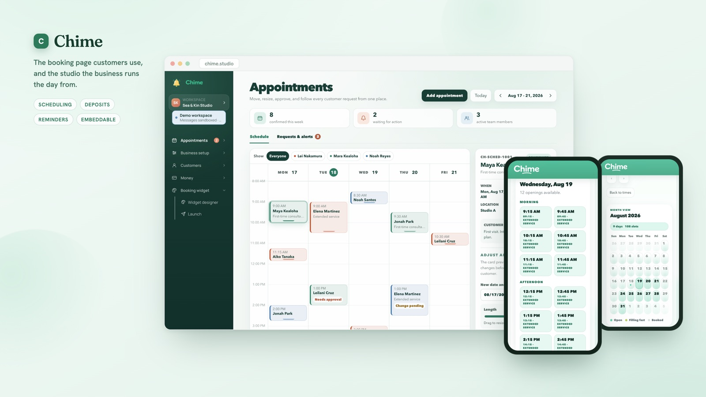
An appointment, in motion.
Find an appointment, review its details, and see how the studio handles a schedule change.
Earlier public reservation tour. The video uses sample appointments and has no sound.
The appointment extends beyond choosing a time.
A small business needs to offer a service, maintain availability and handle the next change without losing the original agreement.
The connected product
Customers choose a service and an opening, then supply the information needed for a request. Staff manage appointments, service rules, team schedules, payments and messages. A later time change can affect a staff member, a customer commitment, an available opening and a notification. I organized Chime around those connections so the next person can see what happened and what still needs a decision.
My role and the evidence
I designed and developed Chime across its interface, application logic and documentation. This case follows source inspected on October 26, 2026, actual customer components demonstrated with fictional data and an authenticated Studio workspace viewed without changes. The public website is functioning; the inspected source was not independently matched to that deployment. Jordan's local flow creates no booking, charge or email. Earlier populated Sea & Kin Studio pictures are separate examples.

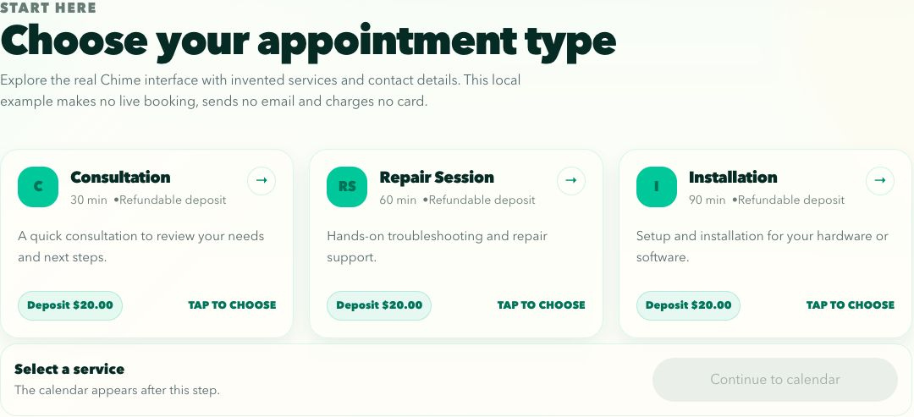
The customer flow makes each decision visible.
Service, time, terms, contact and a conditional deposit form an ordered path with a recognizable result.
Keep the relevant facts close
The service supplies duration and deposit information before the customer chooses an opening. A published service price remains separate from the deposit due now. Month orientation leads into a focused day view, where booked times stay visible but unavailable. Reserve then presents Terms, Contact, Deposit and Done as separate stages. The appointment summary stays close to the terms, and reading and required field gates make the dependency visible before the next action.
Explain the result precisely
The interface gives saving, failure, retry and completion their own states. If a payment identifier exists when a booking save fails, retry retains it instead of starting a fresh payment form. The final screen says the request was received and a confirmation prepared, preserving a distinction between the request and communication. In the illustrated route, Jordan chooses a 30 minute Consultation on October 27 at 9:00 AM with a $20 sample deposit; the result repeats those facts and clearly identifies the local demonstration.

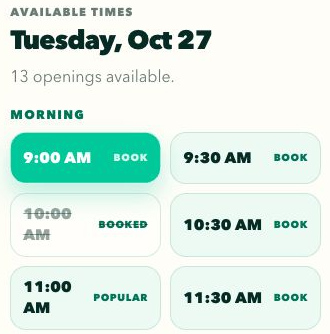

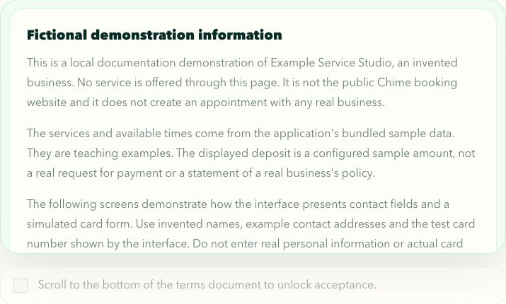

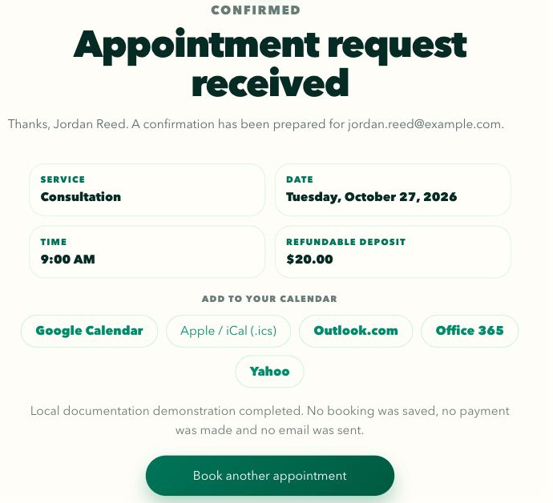
The final write rechecks the current business rules.
In the reviewed implementation, the interface helps someone make a choice and the server decides whether it can still be accepted.
Connect the records transactionally
The reviewed TypeScript and Express service uses PostgreSQL to recheck the business, service, slot state and remaining capacity while holding a slot row lock. It updates capacity and writes the connected booking, customer, calendar and payment references within one transaction. Notice, advance window and deposit checks use current service rules. The final submission is therefore the acceptance point, rather than an older calendar screen becoming a reservation.
Preserve the business boundary
Business routing identifies the organization receiving a request. Staff authentication checks a signed session against current membership, role and business status on each request. Shared appointment contracts connect the frontend and backend models. For the operator, that relationship matters because the appointment, customer and payment should remain part of the same business context when a different workspace or record is opened.

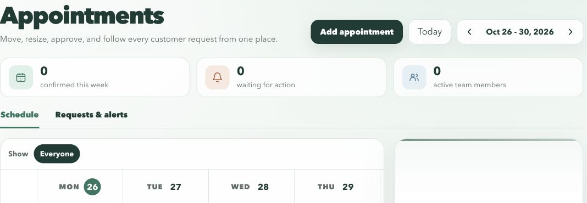
A proposed change must not pretend to be an applied change.
Moving an appointment involves both the calendar and the person whose plans are changing.
Use one consequential review
In the reviewed implementation, dragging and typed edits reach the same change path. A preview compares time, duration, team and location, names the recipient and follows the server supplied plan. An identical change is not sent again. When a customer decision is required, the original appointment stays active and the request can be withdrawn. This separates the time still in force from the proposed alternative.
Make the implementation limit explicit
That revision stores random customer decision tokens as hashes, with expiration and replay handling, then rechecks the proposal on approval. A proposed time is not a guaranteed reservation. Its staff related modes use customer approval because that revision's staff channel is unfinished. This does not establish the current deployed backend's limit: live templates now include newer team and coverage messages. The source was not deployment matched, and no live change decision was exercised.

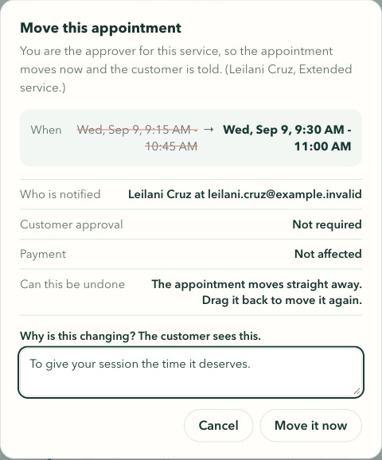
Payment states describe different financial events.
The system and its writing keep authorization, collection, release and refund distinct.
Carry the originating account
In the reviewed implementation, new connected Stripe deposits use manual capture. Authorization differs from collection, and the record retains the account holding the payment for later collection, release or refund. Historical rows without that account use the platform branch. Keeping the origin with the record lets the operator interpret the available action in the context of the payment that exists.
Make actions inspectable
Payment operations require permission, version preconditions and idempotency keys. The refundable amount is bounded by captured money less prior returns. History records the initiator and provider result, while the ledger offers actions appropriate to the current state. The writing uses the same distinctions: releasing a hold differs from returning collected money, and a refund request differs from a credit already posted by the customer's bank.

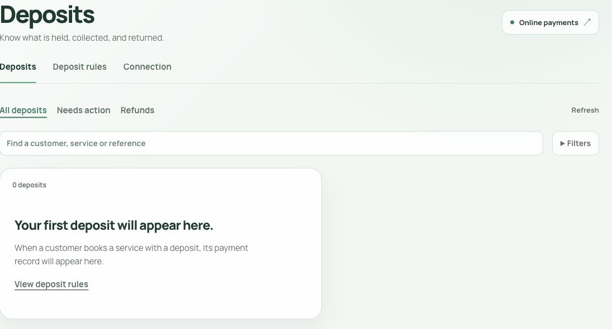

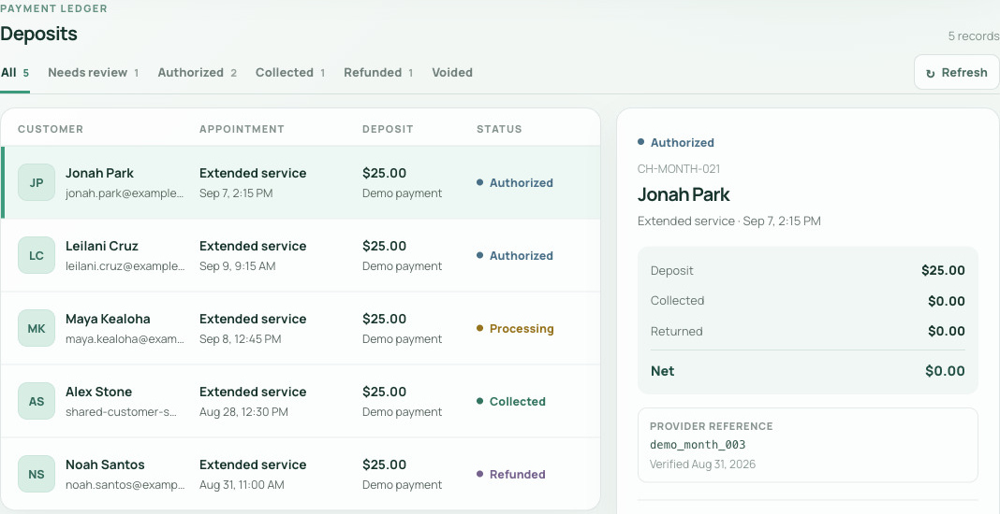
Preparing a message is separate from delivering it.
Communication has its own queue, attempts, environment and recovery state.
Keep background work durable
The reviewed implementation has a separate notification worker with leases, locked queue selection, attempts and retry backoff. Scheduling gives businesses turns instead of letting one backlog take every opportunity. Templates and reply addresses stay connected to the business and appointment. Provider idempotency supports repeated handoff attempts; failed or stopped work remains visible instead of being hidden behind the booking result.
Show the environment and its limit
The live workspace presents Activity, Templates and Sending setup. It reported Live email and an automatic service Running, while Last message accepted remained None recorded. Its own status explains that acceptance does not confirm delivery to an inbox. Published templates can be inspected with sample details without sending; Send preview email is a separate consequential action.

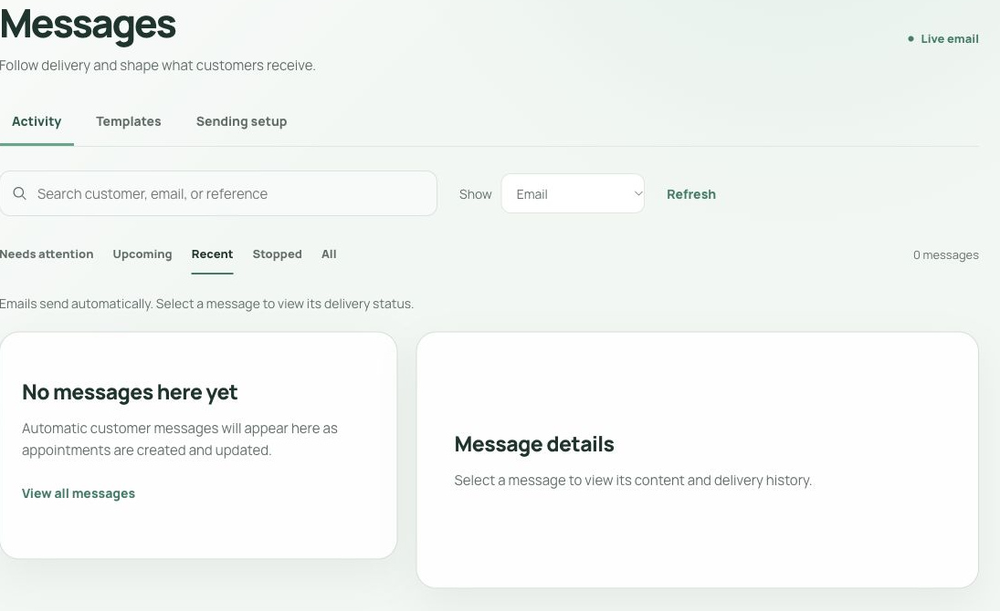

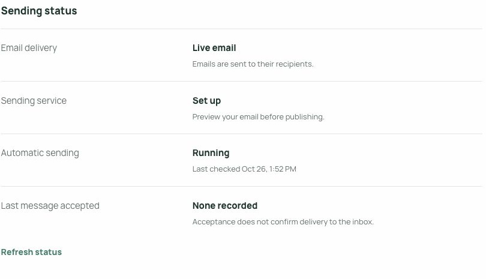
A portable widget keeps business configuration connected.
The same customer components can support a hosted booking page and website placements.
Separate design from publication
The live Widget designer organizes appearance under Your brand, Customer welcome, Color and finish and Saved design, with Wide, Inline and Phone previews. It directs the operator to Launch, which separates a hosted booking link from an installed website widget. The observed workspace made the distinction concrete: the hosted link control was checked, while the website widget was Not published yet and blocked by incomplete readiness. A broad Live badge did not establish every channel as ready.
Keep public configuration public
The project separates customer, Studio, embed and approval builds while sharing the relevant models and customer components. Business routing and display configuration can travel with a public widget; administrator credentials stay outside that connection. The operator can distinguish a saved appearance from an installed widget, a published calendar and a configured payment provider, rather than treating a successful preview as completion of every setup task.

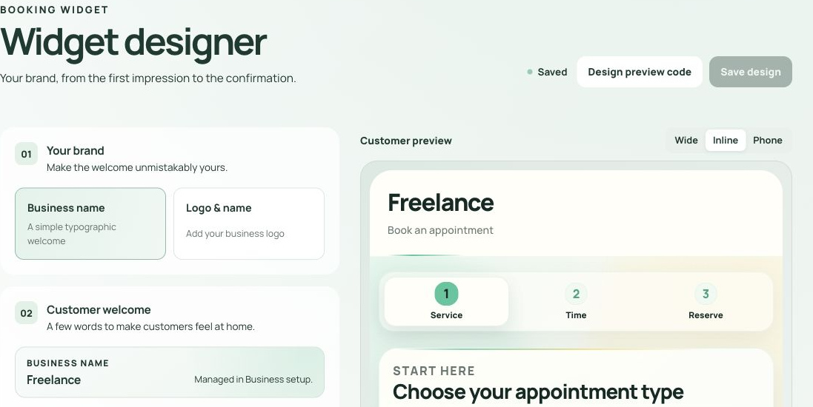

The explanation follows the work and preserves its boundaries.
Technical writing is part of the interface between a system state and the next action someone can take.
Use one concrete customer example
The walkthrough follows Jordan's fictional Consultation through actual customer components, then gives authorized staff direct routes into business operations. Exact controls, nearby screenshots and observable results support the task. Live Studio labels take precedence where they differ from inspected source or earlier Sea & Kin examples. Prerequisites precede consequential actions, and direct entry points let a reader find an appointment, review a move or inspect a deposit without searching through the customer story.
Keep source and observation separate
A compact reference distinguishes price from deposit, request from approval, authorization from collection and prepared confirmation from delivery. Recovery starts with the visible symptom and preserves completed work. One shared content model supplies the web and PDF companions, so a corrected label or qualification can move through every format without creating separate procedural versions.
The evidence supports implementation claims with visible limits.
The review date is October 26, 2026. Source inspection, a synthetic customer flow, an authenticated workspace and earlier public illustrations support different statements.
Describe the checks actually available
The repository contains targeted regression scripts for capacity limits, cross business writes, Stripe account routing, approval replay, refunds and notification fairness. They were inspected, not executed for this writing review. The capacity script exercises the last available place sequentially rather than testing a simultaneous race. The Stripe routing check uses a recording stand in, not real settlement. The local customer screenshots show actual component behavior without a production transaction.
Keep the next work honest
These implementation controls are not a security certification or a guarantee of recovery from every provider or concurrent scheduling failure. The source revision's unfinished staff channel is not asserted as a deployed limitation. Live Studio was viewed without creating appointments, changing setup, sending messages or moving money. No adoption, time saving, accessibility conformance or representative user study is claimed. Those remain evaluation questions; the case describes the work and evidence available now.